לחץ על ה-AirPods שלך כדי להשתיק
במהלך כל שיחה, לחץ על הזרוע פעם אחת כדי להשתיק ושוב כדי לבטל השתקה. זה פועל אפילו ב-Chrome, שבו Google Meet ושיחות רשת אחרות מתעלמות מלחיצה על ה-AirPods.

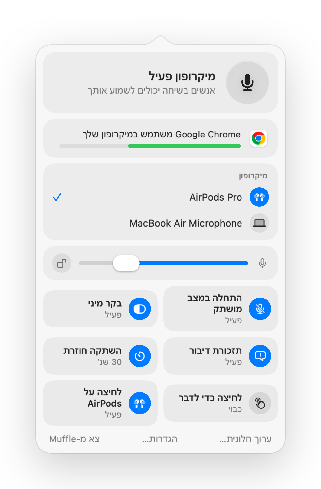
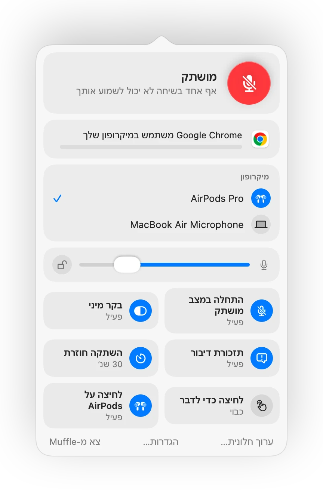
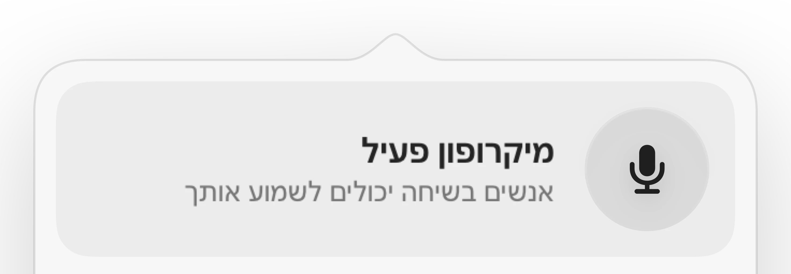
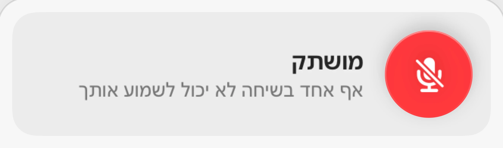
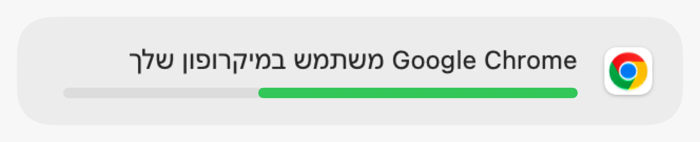
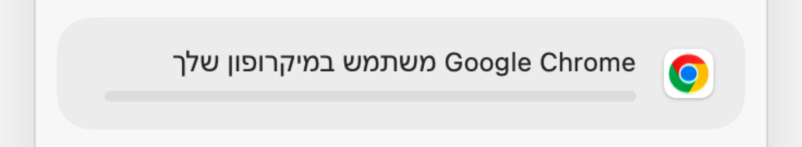
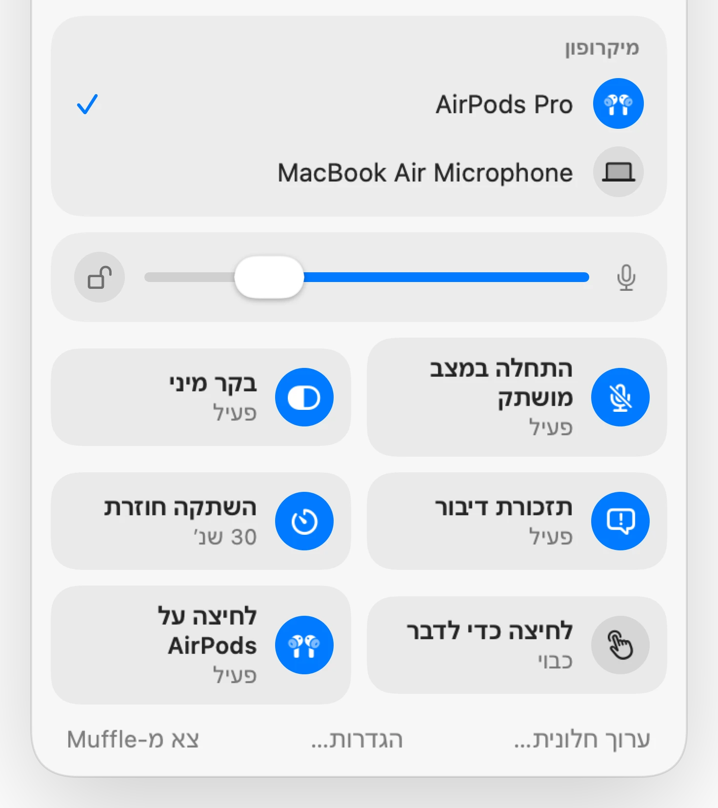
Muffle ל-Mac
לחץ על ה-AirPods שלך או על קיצור מקלדת יחיד. Muffle מכבה את המיקרופון עצמו, כך ש-Google Meet, Zoom, Teams, Slack וכל אפליקציה אחרת שומעות שקט.
חינם ל-3 ימים. לאחר מכן תשלום חד פעמי, ללא מינוי. עבור macOS 14 Sonoma ואילך.
לחץ על הלחצן, לחץ על ה-AirPods שלך או השתמש בקיצור דרך. Muffle מכבה את המיקרופון עצמו, כך שכל אפליקציה שומעת שקט.
השתק, בחר את המיקרופון שלך, נעל את הרמה שלו והפעל וכבה תכונות, ישירות משורת התפריטים.
כל מיקרופון ב-Mac שלך נמצא ממש שם. בחר אחד וכל אפליקציה תשתמש בו.
Chrome, Zoom ו-Teams משנים את רמת המיקרופון שלך בעצמם. נעל אותה ו-Muffle יחזיר אותה.
הפעל וכבה תכונות ישירות מהחלונית, ובחר אילו מהן יופיעו בה.
רוב לחצני ההשתקה משתיקים רק אפליקציה אחת. Muffle מכבה את המיקרופון עצמו, כך שכל אפליקציה ב-Mac שלך שומעת דממה.
בחר סמל לשורת התפריטים: רגיל, ירוק ואדום, או רק נקודה. Muffle יכול לפעול עם הפעלת ה-Mac שלך.
התחל כל שיחה במצב מושתק, בטל השתקה כשהיא מסתיימת, והשתק כשה-Mac ננעל או כשהאוזניות מתנתקות.
הקש כדי להחליף מצב, החזק כדי לדבר, או החזק כדי להשתיק. הוסף מקשים נפרדים להשתקה ולביטול השתקה, או מקש דיבור כמו ⌥ ימני.
בחר מה יוצג בחלונית שורת התפריטים ואילו מתגים מהירים יופיעו בתחתית.
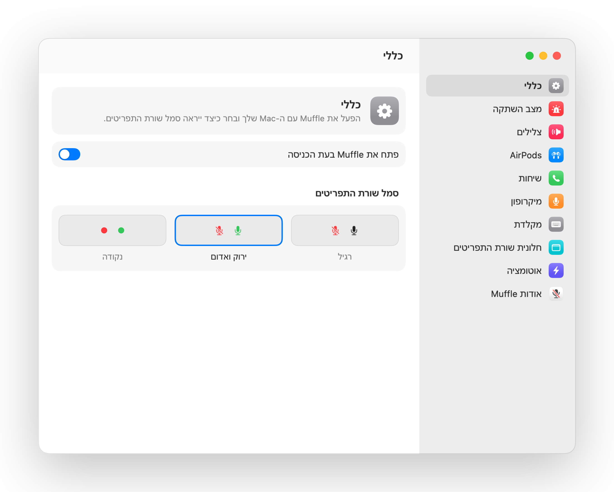
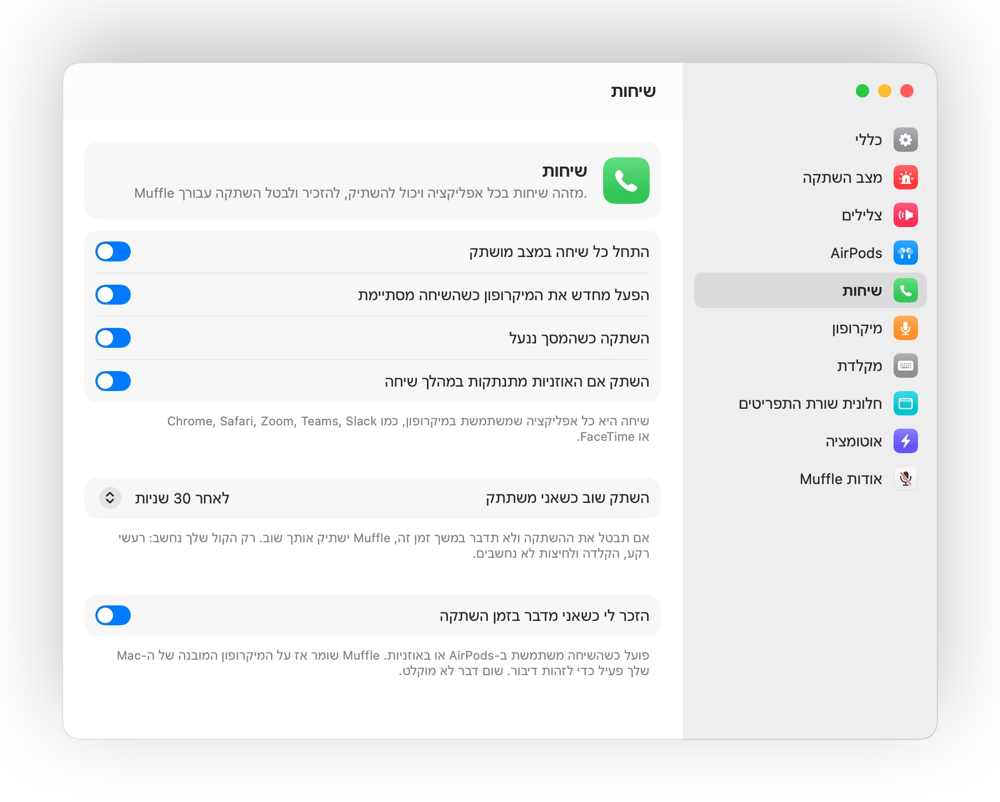
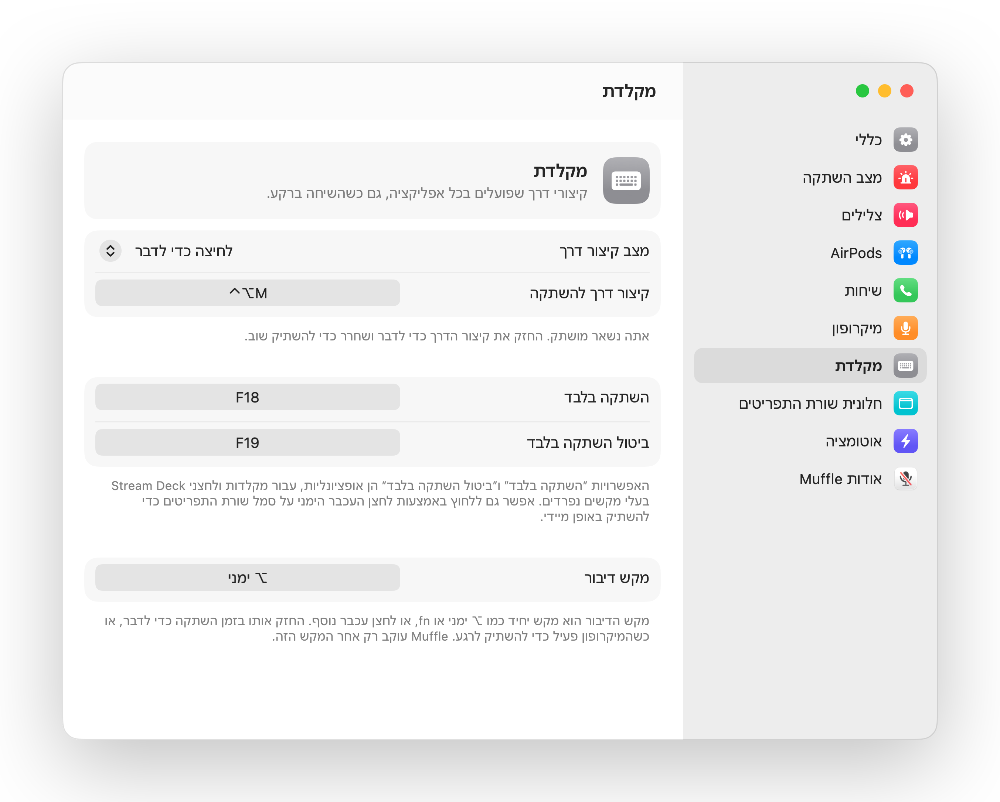
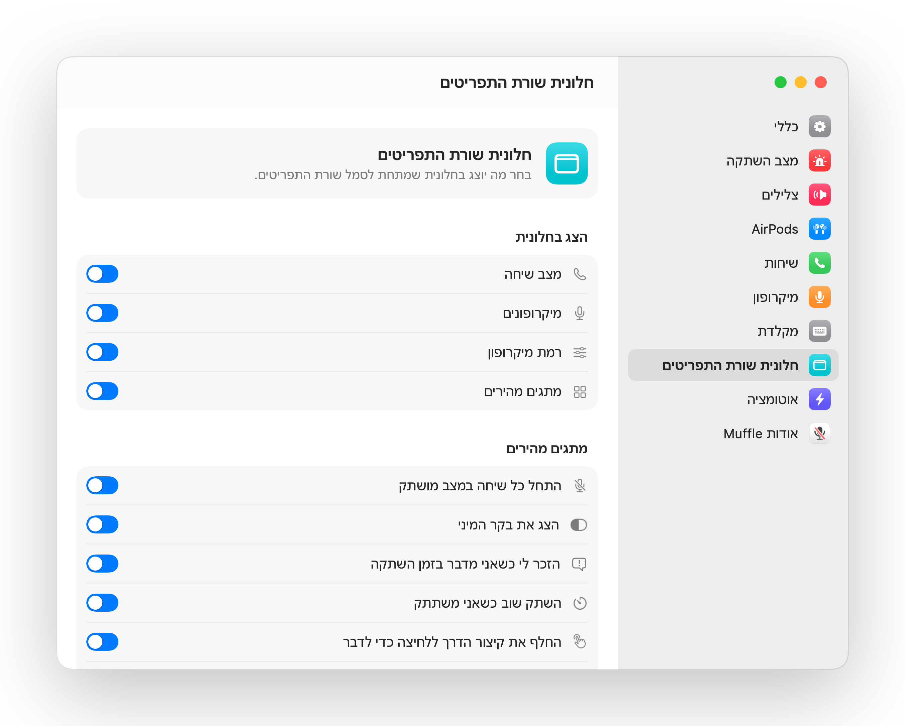
במהלך כל שיחה, לחץ על הזרוע פעם אחת כדי להשתיק ושוב כדי לבטל השתקה. זה פועל אפילו ב-Chrome, שבו Google Meet ושיחות רשת אחרות מתעלמות מלחיצה על ה-AirPods.
אם תתחיל לדבר בזמן השתקה, Muffle יעדכן אותך מיד, עוד לפני שתסביר רעיון שלם לאף אחד.
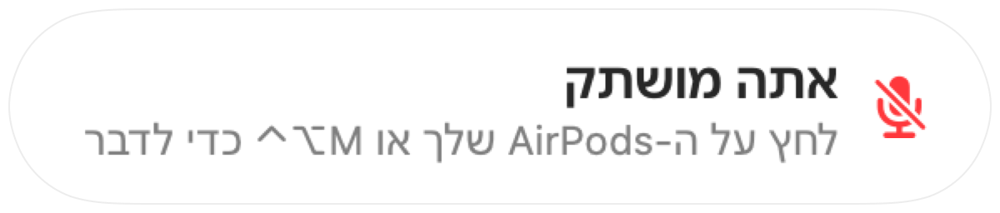
Control-Option-M משתיק אותך בכל מקום, גם כשהשיחה נמצאת בכרטיסייה ברקע. החזק אותו לחוץ כדי לדבר בזמן השתקה, ושחרר כדי להשתיק שוב.
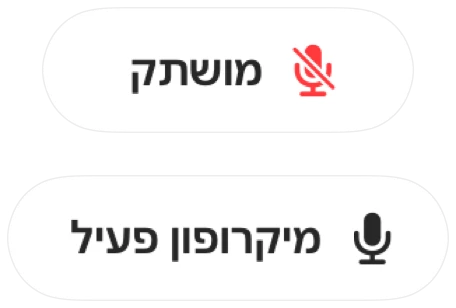
Chrome, Zoom ו-Teams משנים את עוצמת המיקרופון בעצמם. נעל אותה ו-Muffle יחזיר אותה למקומה.

לחצן צף קטן מציג את מצב המיקרופון במהלך שיחות. לחץ עליו כדי להשתיק או לבטל השתקה.
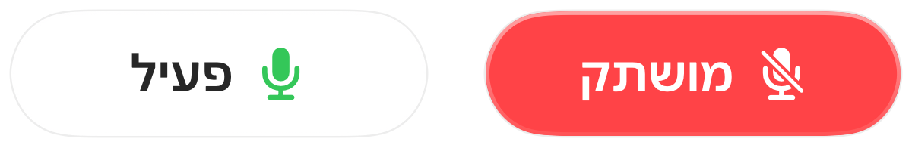
בחר כיצד קיצור הדרך שלך פועל: הקש כדי להחליף מצב, החזק כדי לדבר, או החזק כדי להשתיק לשיעול. הוסף מקשים נפרדים להשתקה ולביטול השתקה, או החזק מקש בודד כמו ⌥ ימני או לחצן עכבר נוסף.
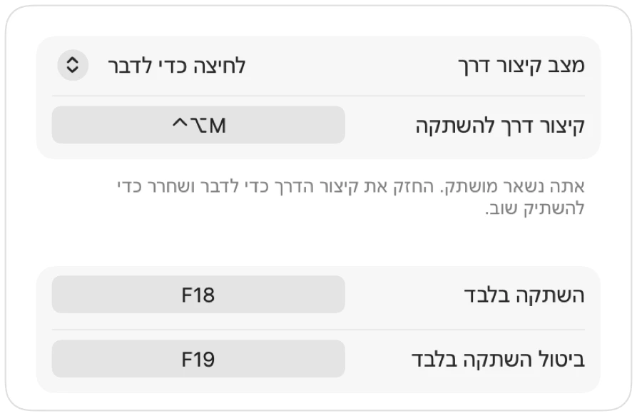
ביטלת את ההשתקה כדי להגיד משהו? אם תישאר בשקט במשך הזמן שבחרת, Muffle ישתיק אותך שוב. רק הקול שלך נחשב, לא הקלדה או רעשי רקע.
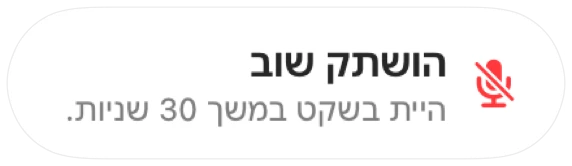
עם AirPods בחדר שקט, Muffle מציע להשתמש במיקרופון של ה-Mac כדי שה-AirPods ישמיעו את השיחה באיכות מלאה. כשנהיה רועש, הוא מציע את המיקרופון של ה-AirPods.
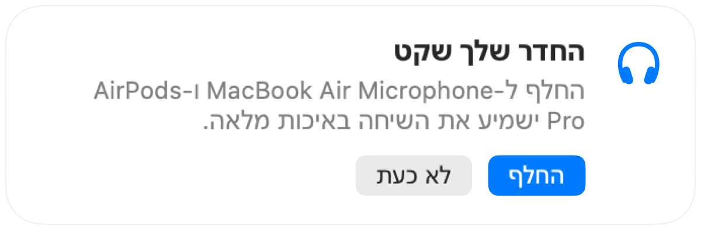
התחל כל שיחה במצב מושתק, הפעל מחדש את המיקרופון כשהשיחה מסתיימת, והשתק בכל פעם שאתה נועל את ה-Mac.
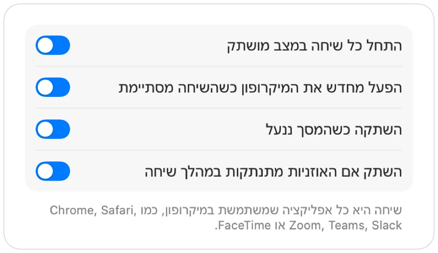
אם האוזניות מתנתקות באמצע שיחה, Muffle משתיק את הקול לפני שהשיחה עוברת למיקרופון של ה-Mac ומשדרת את כל החדר.
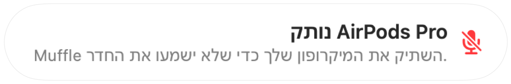
השתק מאפליקציית קיצורי דרך, מ-Siri, מ-Stream Deck, מ-Raycast או מלחצן במרכז הבקרה.
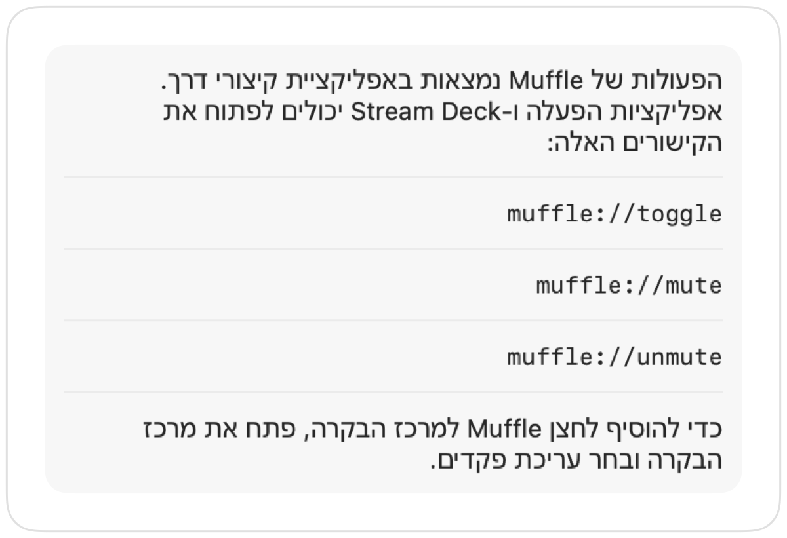
זוהר ירוק או אדום סביב המסך, סמל צבעוני בשורת התפריטים, לחצן צף וצליל שאפשר לכבות עבור כל מיקרופון. הפעל את אלה שאתה רוצה.
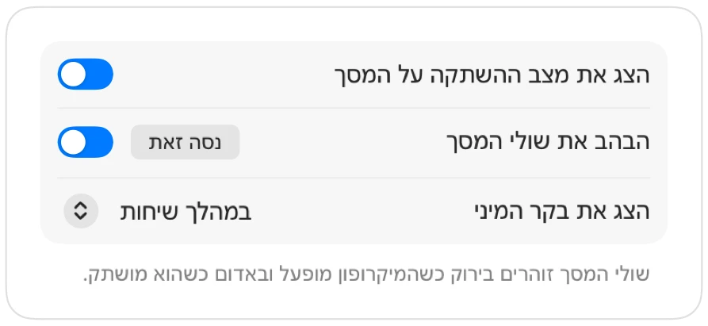
Muffle לעולם לא מקליט, שומר או שולח שמע. הוא רק מפעיל ומכבה את המיקרופון שלך וקורא את עוצמת הקול שלו. באפליקציה אין חשבונות, אין ניתוח נתונים ואין מעקב.
התקן את Muffle מ-Mac App Store ואפשר גישה למיקרופון.
הצטרף לשיחה בכל אפליקציה, כרגיל.
לחץ על ה-AirPods שלך, הקש Control-Option-M או לחץ על הסמל בשורת התפריטים כדי להשתיק.
כן. Chrome אינו מעביר את לחיצת ההשתקה של AirPods לשיחות רשת, לכן Muffle קולט אותה ומשתיק את המיקרופון עצמו. כך גם בכל שיחה בכרטיסיית דפדפן.
אפליקציית השיחה עדיין עשויה להציג את המיקרופון שלך כפעיל, מכיוון ש-Muffle מכבה את המיקרופון עצמו ולא את הלחצן באפליקציה. אנשים ישמעו שקט בכל מקרה. הסמל של Muffle בשורת התפריטים הופך לאדום בזמן שאתה מושתק.
AirPods Pro, AirPods 3 ואילך, ו-AirPods Max, בנוסף לדגמי Beats עם פקדי שיחה. קיצור המקלדת ושורת התפריטים פועלים עם כל מיקרופון.
כן. Muffle פועל עם כל אפליקציה ב-Mac שמשתמשת במיקרופון, הן באפליקציות שולחניות והן בשיחות דפדפן.
לא. נסה כל תכונה בחינם למשך 3 ימים, ולאחר מכן בטל את הנעילה של Muffle ברכישה חד פעמית.
macOS מעביר לחיצות AirPods רק לאפליקציות שמשתמשות במיקרופון, לכן Muffle שומר על חיבור שקט פתוח במהלך שיחות. שום דבר אינו מוקלט.
Muffle מפעיל את המיקרופון מחדש בעת היציאה, כך שלעולם לא תישאר מושתק ללא כוונה.
macOS 14 Sonoma ואילך. הלחצן במרכז הבקרה דורש את macOS 26 ואילך.
כן. בחר ״לחיצה כדי לדבר״ בהגדרות והחזק את קיצור הדרך כדי לדבר. תוכל גם להחזיק מקש בודד כמו ⌥ ימני או fn, או לחצן עכבר נוסף.
כששיחה משתמשת במיקרופון של ה-AirPods, ה-AirPods עוברים למצב שיחה שמשמיע שמע באיכות נמוכה יותר. בחדר שקט Muffle מציע להשתמש במקום זאת במיקרופון של ה-Mac, כך שה-AirPods ימשיכו לפעול באיכות מלאה.
לא. Muffle מזהה דיבור באמצעות ניתוח שמע במכשיר מבית Apple, כך שרק דיבור נחשב. הקלדה, לחיצות ורעשי רקע לא נחשבים, ושום דבר לא מוקלט.
Muffle זמין להתנסות בחינם למשך 3 ימים.